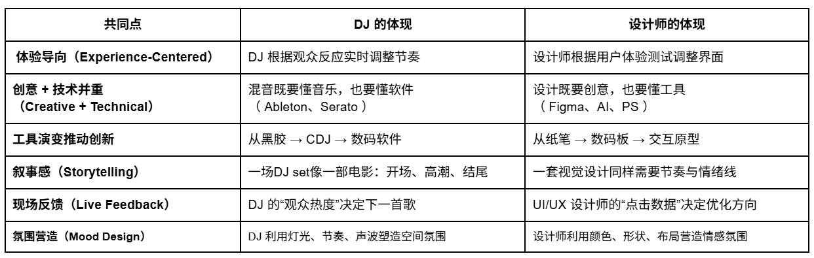

Image Description
体验感
DJ 最重要的是要懂得「看现场」。
如果观众开始冷掉，他就会马上换节奏、换气氛，让大家重新动起来。
设计师也是一样，不是自己觉得好就行，要看使用者用得顺不顺、感受好不好。
一个是看人跳不跳，一个是看人用不用。
最后目标都一样——让人觉得舒服、觉得爽、觉得想继续下去。
Full-screen intro with Image and video popup.
DJ 的诞生，声音传播媒介的设计
“体验设计”的雏形出现
DJ 成为音乐创作的主导
“声音设计”正式成为艺术形式
DJ 转变为“舞台表演艺术家”
从“模拟”进入“数字设计”时代
DJ 与视觉、灯光、品牌设计融合
DJ 成为多感官体验设计师
Image Description
DJ 最重要的是要懂得「看现场」。
如果观众开始冷掉，他就会马上换节奏、换气氛，让大家重新动起来。
设计师也是一样，不是自己觉得好就行，要看使用者用得顺不顺、感受好不好。
一个是看人跳不跳，一个是看人用不用。
最后目标都一样——让人觉得舒服、觉得爽、觉得想继续下去。

Image Description
DJ 不只是放歌这么简单，他要很懂设备，要懂怎么混、怎么调，才能做出特别的感觉。
设计师也一样，有创意是基本，但也要会用工具去实现，比如怎么排版、怎么动效、怎么做原型。
他们都是脑子有想法，手上有本事。
靠的是创意，也靠的是技术。
Image Description
以前 DJ 是用黑胶唱片，后来变成 CD，再到现在全数码化。
工具每进步一点，他们就能玩出新的花样。
设计师也是，从纸上画图，到电脑上设计，再到现在可以做互动原型。
工具在变，创意也跟着升级。
每一次工具的进步，都是一次新的灵感机会。
Image Description
一场 DJ 的表演，其实就像一部电影。
有开头、有铺垫、有高潮、有结尾。
一个好的 DJ 能用音乐带观众走完一段情绪旅程。
设计师也是一样，只不过他们用画面、用界面在讲故事。
一个是用声音在讲，一个是用视觉在讲。
都是在让人「跟着感觉走」
Image Description
DJ 一抬头就能看到观众的反应。
如果冷掉，就马上换歌；如果气氛起来了，就让节奏更猛一点。
设计师虽然看不到现场，但也会根据数据反应来调整。
比如哪里没人点、哪个页面大家停太久，就去改、去优化。
不管是 DJ 还是设计师，都是「边做边看边改」，靠反馈让体验越来越好
Image Description
DJ 会用灯光、节奏、音色去做出气氛。
他可以让一个普通场地变成让人兴奋的空间。
设计师也是一样，用颜色、形状、布局去营造情绪。
让人一看画面就有感觉——温柔、冷静、活泼、专业都能体现出来。
两者都是在「创造一种感觉」，让人一进来就被吸引

一句话总结：
DJ 用音乐设计“听觉体验”；
设计师用视觉设计“观看体验”；
两者都是“情绪体验的设计师”
Tomorrowland 是全球最大、最具影响力的电子音乐节之一，每年在比利时举办。它不仅是音乐活动，更像是一场**“沉浸式设计展”**，融合了舞台视觉、建筑美学、灯光编排与音乐节奏的完美设计
Video Description
Tomorrowland 不只是音乐节，它是一场音乐和设计一起做出来的「情绪旅程」。
幕后有舞台设计师、动画师、灯光师、声音工程师和 DJ 一起合作，
用声音和视觉，做出一场让人心跳跟着节奏动的表演。
每年都有不同主题，像《智慧之书》《深海故事》。
舞台高过五十米，上千个灯光和 LED 一起动，整个现场像活的一样。
音乐和灯光是同步的，
节奏快灯光闪，节奏慢气氛沉，
观众不是在听歌，而是在「体验」音乐。
连走动路线都配合节奏设计，
从入口到主舞台，整场活动像一条情绪曲线。
所以，Tomorrowland 成功不是因为歌好听，
而是因为它把声音变成视觉，
让视觉也有情绪
这就是它的魔力
Ultra Music Festival（简称 UMF）是全球最著名的电子音乐节之一，每一届 UMF 的主舞台（Main Stage）都以科技、灯光、影像与建筑设计**的创新而闻名。
DJ 的表演和舞台视觉节奏同步，是设计与音乐完美结合的代表
Video Description
Ultra Music Festival（UMF）不只是电子音乐节，
它是一场音乐和设计「同步跳动」的表演。
舞台后面有灯光设计师、视觉导演、建筑师和 DJ 一起合作，
把节奏、灯光、动画全都对在一起。
每当音乐到高潮，
灯光爆闪、画面炸开，
观众不只是听节奏，而是看到节奏在动。
舞台是动态建筑，
每个 LED、每束光，都跟节拍同步，
整座舞台就像一台「会跳动的乐器」。
DJ 放音乐，
设计师放视觉，
两边互相配合，情绪在节奏里流动。
从舞台形状、色彩、到灯光节奏，
一切都围绕着「让人感受到音乐」。
Ultra 的成功，不只是因为 DJ 大咖，
而是因为它让观众听见声音，也看见能量。
音乐和设计融合成一体，
变成一种——可以被看见的节奏体验。
Virgil Abloh（1980–2021）不仅是 Off-White 的创始人、Louis Vuitton 男装艺术总监，
同时也是一位活跃于全球电子音乐节的 DJ（艺名：Flat White）。
他始终相信：「时尚、音乐、建筑、平面设计其实是同一个语言，只是媒介不同。」
Video Description
Virgil Abloh 不只是 Off-White 的创始人、Louis Vuitton 男装艺术总监，
他同时也是一名 DJ。
在他眼里，时尚、音乐、建筑、平面设计，
其实都是在说同一种语言——只是媒介不同。
他的秀场不是「走秀」，而是一场「体验设计」。
音乐不是背景，而是叙事的一部分。
灯光、节奏、步伐、空间，全都被他“编排成情绪”。
在 Louis Vuitton 2019 秋冬系列，
他把秀场变成一整座城市，
灯光随着节拍闪动，节奏一换，气氛也变。
观众不是在「看衣服」，
而是在「感受」一场节奏的旅程。
Virgil 说过：
“He didn’t design clothes — he designed the moment.”
他做的不是服装，而是「瞬间」。
一种能让你听到、看到、甚至感受到设计的瞬间。
这，就是他的魔力
Peggy Gou，不只是世界级 DJ，
也是服装品牌 Kirin by Peggy Gou 的创始人
Video Description
音乐和时尚，都是节奏，只是一个给身体，一个给眼睛。
她的时装秀，不只是走台，
而是一场「视觉 × 节奏」的体验。
音乐 BPM 与模特步伐同步，
灯光、节奏、氛围随拍而动，
观众不只是看时尚，而是“被节奏带着走”。
Kirin 的设计带有夜店的光感与律动，
霓虹色、反光材质、几何图形，
像音乐一样——充满流动的能量。
Peggy Gou 把 DJ 的逻辑带进设计，
用声音讲视觉，用视觉延伸音乐。
她的品牌与 Nike、Louis Vuitton、Chanel 合作，
用每一场表演，做出一场“生活的混音”。
她不只是设计衣服，
她在设计一种「节奏感的生活」
Use Mobirise website building software to create multiple sites for commercial and non-profit projects.

Best AI Website Creator